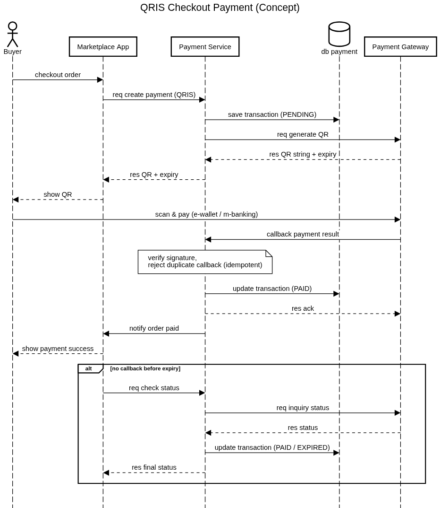
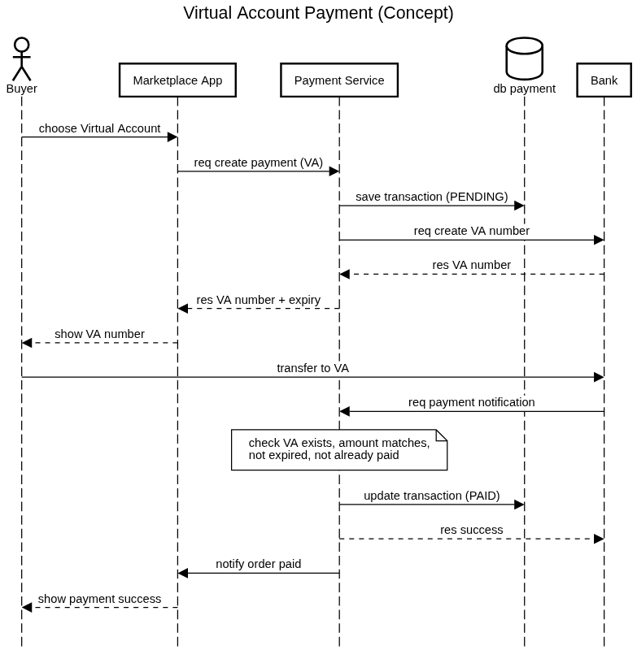

Payment Integration: QRIS & Virtual Account
Replacing manual bank-transfer confirmation in a marketplace with automated QRIS and Virtual Account payments, from requirements to API specification and test scenarios.
PasarKita is a fictional company. This case was written to show how I analyse a payment integration; it does not use any employer or partner material.
01Context & Problem
PasarKita is a marketplace for small businesses. Buyers pay by manual bank transfer, upload a transfer receipt, and an admin checks each receipt against the bank statement before the order is processed.
- Orders wait hours, sometimes overnight, for an admin to confirm the payment.
- Buyers transfer the wrong amount or forget to upload the receipt, so admins chase them one by one.
- Finance has no single place to see which orders are paid, pending, or expired.
Goal: buyers pay with QRIS or a Virtual Account and the order status changes to Paid automatically, without admin involvement.
02Scope
In scope
- Payment Service between Marketplace App and payment providers
- QRIS (dynamic QR per order) and Virtual Account
- Payment callback / notification handling
- Status check when a callback does not arrive
- Daily reconciliation report for Finance
Out of scope
- Refunds and partial payments
- Card payments
- Seller settlement / payout
03Requirements
Functional
| ID | Requirement | Priority |
|---|---|---|
| FR-01 | Buyer can choose QRIS or Virtual Account at checkout. | Must |
| FR-02 | System creates one payment per order with an amount equal to the order total and an expiry time. | Must |
| FR-03 | System shows the QR or VA number together with the amount and expiry countdown. | Must |
| FR-04 | System updates the order to Paid when the provider confirms payment. | Must |
| FR-05 | If no confirmation arrives before expiry, system checks the status with the provider before marking the payment Expired. | Must |
| FR-06 | Finance can download a daily list of payments and their status for reconciliation. | Should |
Non-functional
- Idempotent: a duplicate callback must not change a payment twice.
- Verified: every callback is verified (signature) before it is trusted.
- Consistent amount: a notification whose amount differs from the payment is rejected and logged.
- Secure: provider credentials stored in environment / vault, sensitive data masked in logs.
04Design
The Marketplace App never talks to providers directly. A single Payment Service owns the transaction record and the provider integration, so adding a new method later does not touch the app.


Payment status
A payment only moves forward. Once it is PAID, EXPIRED, or FAILED it never changes again, which is what makes duplicate callbacks safe.
05API Specification
Create Payment — POST /payment/create
| Type | Field | Req | Description |
|---|---|---|---|
| String | orderId | M | Marketplace order number, unique per payment |
| Number | amount | M | Order total in IDR, no decimals |
| String | method | M | QRIS or VA |
| String | bankCode | C | Required when method is VA |
| Object | customer | M | Name, email, phone |
{
"paymentId": "PAY-20261018-000123",
"orderId": "PK-88412",
"status": "PENDING",
"method": "QRIS",
"qrString": "00020101021226...6304A1B2",
"amount": 150000,
"expiredAt": "2026-10-18T10:15:00+07:00"
}
Payment Callback — POST /payment/callback
| Type | Field | Req | Description |
|---|---|---|---|
| String | paymentId | M | Payment reference from Create Payment |
| String | status | M | PAID or FAILED |
| Number | paidAmount | M | Must equal the payment amount |
| String | paidAt | M | ISO 8601 timestamp |
| String | signature | M | Verified before the callback is processed |
Check Status — GET /payment/status/{paymentId}
Returns the latest status. If the payment is still PENDING after expiry, the Payment Service asks the provider first, then stores and returns the final status.
06Test Scenarios
| No | Scenario | Expected Result |
|---|---|---|
| 1 | Pay QRIS with the exact amount before expiry | Callback received, order becomes Paid |
| 2 | Pay to VA with the exact amount | Notification accepted, order becomes Paid |
| 3 | Same callback sent twice | Second callback acknowledged, payment not changed again |
| 4 | Callback with invalid signature | Rejected and logged, payment stays Pending |
| 5 | VA notification with a different amount | Rejected, payment stays Pending |
| 6 | Buyer pays but callback never arrives | Status check after expiry finds Paid, order becomes Paid |
| 7 | Buyer does not pay before expiry | Status check confirms unpaid, payment becomes Expired |
| 8 | Daily reconciliation report | Every payment of the day listed once with its final status |
07Risks & Mitigation
| Risk | Impact | Mitigation |
|---|---|---|
| Callback lost or delayed | Buyer paid but order still Pending | Status check at expiry and on buyer request; daily reconciliation |
| Duplicate or forged callback | Order marked Paid twice or without payment | Signature verification, idempotent update, forward-only status |
| Provider downtime | Buyers cannot create payments | Timeouts and clear error message; buyer can switch method |